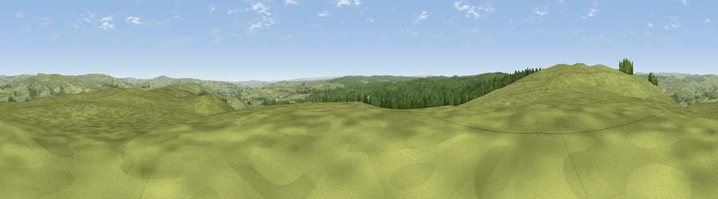

Viewpoint near Bellingham
#13246 in England · top 30% of its area beats it · near BellinghamThe view, rendered

A 360° render of this exact spot computed from the terrain model, tree cover and land cover — summer colours, afternoon light, calibrated against photographs of famous viewpoints. Real trees, hedges and buildings will differ in detail.
The panorama
Grey silhouette: terrain skyline in each direction (720 bearings, Earth curvature and refraction included). Dashed green: skyline with trees (+15 m) and buildings (+8 m) as obstacles. Blue strip: how far the ground is visible on each bearing.
Where the view opens
Wedge length = distance to the farthest visible ground on that bearing (vegetation-aware). Rings at 10, 25 and 50 km.
What fills the view
80% grassland · 19% woodland
Angular shares of the visible panorama (visual magnitude), not map area. Landscape diversity 0.23 (0–1 Shannon).
Key numbers
More beautiful places nearby
The staircase of upgrades: each row has a higher view potential than everything closer. Driving times are estimates from straight-line distance, calibrated against real road routing — check an actual route before setting out.
| Place | Direction | Drive | Score |
|---|---|---|---|
| Viewpoint near Bellingham | ENE · 1 km | ~2 min | 60.5 |
| Viewpoint near Greenhaugh | WNW · 1 km | ~3 min | 71.2 |
| Padon Hill | NNE · 11 km | ~21 min | 72.6 |
| Viewpoint near West Woodburn | E · 13 km | ~24 min | 73.4 |
| Blackman's Law | NNW · 17 km | ~30 min | 74.1 |
| Monkside | NW · 17 km | ~30 min | 78.4 |
| Viewpoint near Bewcastle | W · 21 km | ~35 min | 78.9 |
| Viewpoint c11644_7156 | W · 22 km | ~36 min | 80.8 |
55.13082, -2.32109 · source: screening · position refined by local search. Computed location — check access rights before visiting.